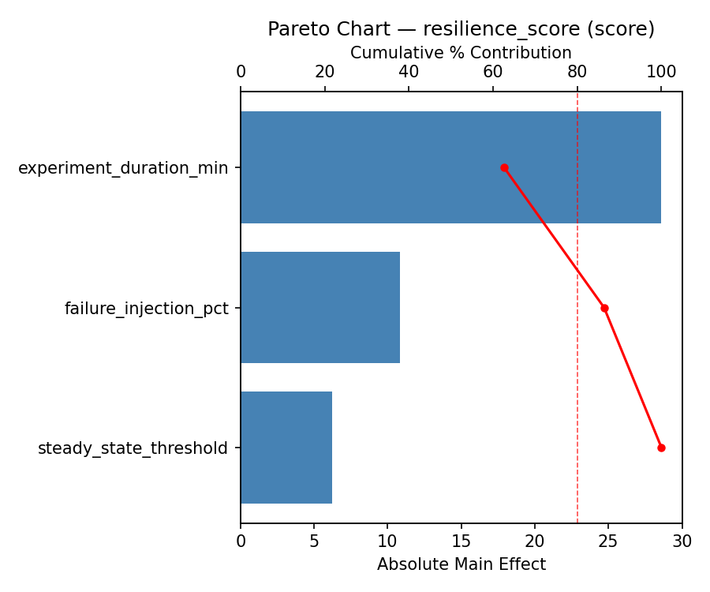
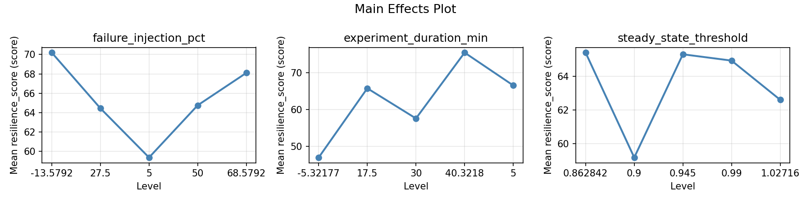
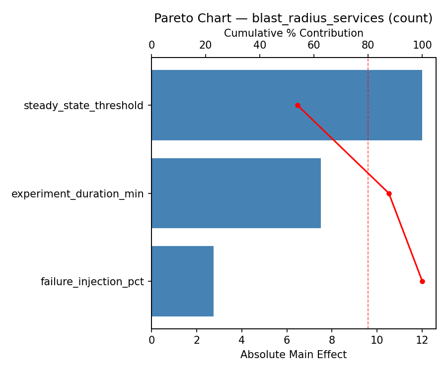
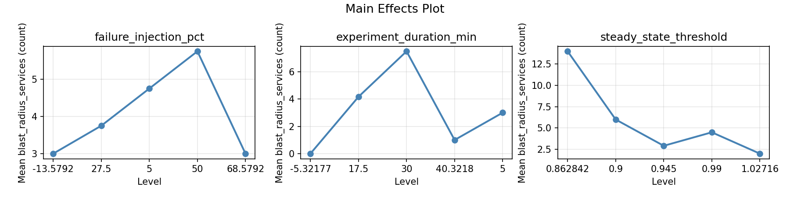
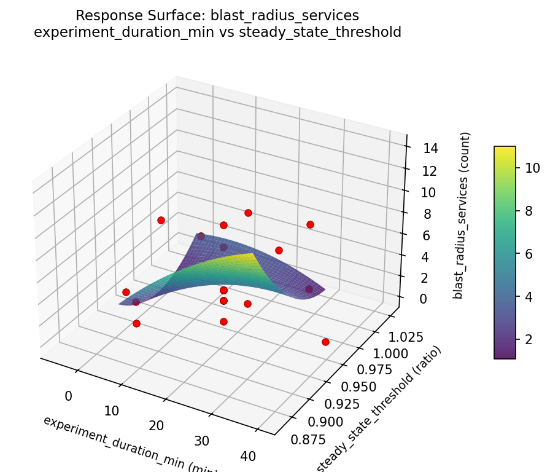
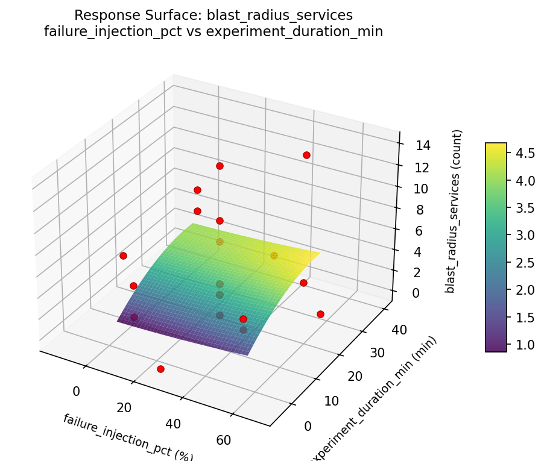
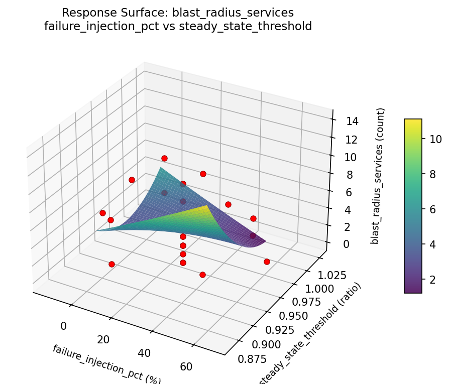
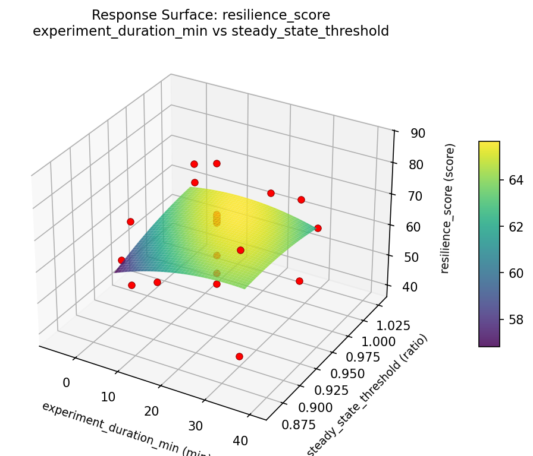
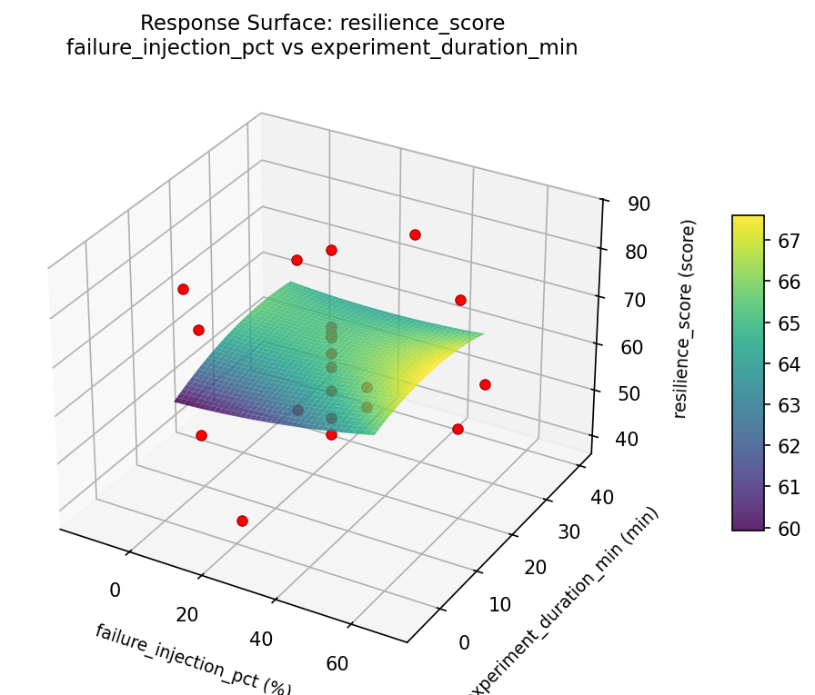
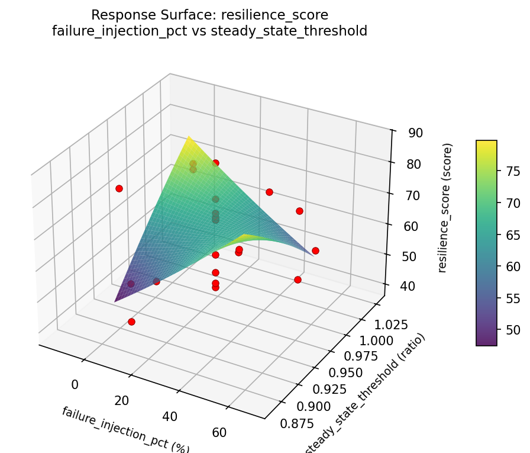

Experimental Setup
Factors
| Factor | Low | High | Unit |
|---|
failure_injection_pct | 5 | 50 | % |
experiment_duration_min | 5 | 30 | min |
steady_state_threshold | 0.9 | 0.99 | ratio |
Fixed: tool = litmus, target = microservices
Responses
| Response | Direction | Unit |
|---|
resilience_score | ↑ maximize | score |
blast_radius_services | ↓ minimize | count |
Configuration
{
"metadata": {
"name": "Chaos Engineering Blast Radius",
"description": "Central Composite design to optimize failure injection, experiment duration, and steady state threshold for resilience"
},
"factors": [
{
"name": "failure_injection_pct",
"levels": [
"5",
"50"
],
"type": "continuous",
"unit": "%"
},
{
"name": "experiment_duration_min",
"levels": [
"5",
"30"
],
"type": "continuous",
"unit": "min"
},
{
"name": "steady_state_threshold",
"levels": [
"0.9",
"0.99"
],
"type": "continuous",
"unit": "ratio"
}
],
"fixed_factors": {
"tool": "litmus",
"target": "microservices"
},
"responses": [
{
"name": "resilience_score",
"optimize": "maximize",
"unit": "score"
},
{
"name": "blast_radius_services",
"optimize": "minimize",
"unit": "count"
}
],
"settings": {
"operation": "central_composite",
"test_script": "use_cases/86_chaos_engineering_blast_radius/sim.sh"
}
}
Experimental Matrix
The Central Composite Design produces 22 runs. Each row is one experiment with specific factor settings.
| Run | failure_injection_pct | experiment_duration_min | steady_state_threshold |
|---|
| 1 | 27.5 | 17.5 | 0.945 |
| 2 | 50 | 5 | 0.99 |
| 3 | 5 | 30 | 0.9 |
| 4 | 27.5 | 40.3218 | 0.945 |
| 5 | 27.5 | 17.5 | 0.945 |
| 6 | -13.5792 | 17.5 | 0.945 |
| 7 | 27.5 | 17.5 | 0.862842 |
| 8 | 27.5 | 17.5 | 0.945 |
| 9 | 50 | 30 | 0.9 |
| 10 | 68.5792 | 17.5 | 0.945 |
| 11 | 27.5 | 17.5 | 0.945 |
| 12 | 27.5 | -5.32177 | 0.945 |
| 13 | 27.5 | 17.5 | 0.945 |
| 14 | 5 | 5 | 0.99 |
| 15 | 27.5 | 17.5 | 0.945 |
| 16 | 50 | 5 | 0.9 |
| 17 | 27.5 | 17.5 | 1.02716 |
| 18 | 50 | 30 | 0.99 |
| 19 | 27.5 | 17.5 | 0.945 |
| 20 | 5 | 5 | 0.9 |
| 21 | 5 | 30 | 0.99 |
| 22 | 27.5 | 17.5 | 0.945 |
Step-by-Step Workflow
1
Preview the design
$ python doe.py info --config use_cases/86_chaos_engineering_blast_radius/config.json
2
Generate the runner script
$ python doe.py generate --config use_cases/86_chaos_engineering_blast_radius/config.json \
--output use_cases/86_chaos_engineering_blast_radius/results/run.sh --seed 42
3
Execute the experiments
$ bash use_cases/86_chaos_engineering_blast_radius/results/run.sh
4
Analyze results
$ python doe.py analyze --config use_cases/86_chaos_engineering_blast_radius/config.json
5
Get optimization recommendations
$ python doe.py optimize --config use_cases/86_chaos_engineering_blast_radius/config.json
6
Generate the HTML report
$ python doe.py report --config use_cases/86_chaos_engineering_blast_radius/config.json \
--output use_cases/86_chaos_engineering_blast_radius/results/report.html
Features Exercised
| Feature | Value |
|---|
| Design type | central_composite |
| Factor types | continuous (all 3) |
| Arg style | double-dash |
| Responses | 2 (resilience_score ↑, blast_radius_services ↓) |
| Total runs | 22 |
Analysis Results
Generated from actual experiment runs using the DOE Helper Tool.
Response: resilience_score
Top factors: failure_injection_pct (34.2%), experiment_duration_min (34.1%), steady_state_threshold (31.7%).
Pareto Chart

Main Effects Plot

Response: blast_radius_services
Top factors: experiment_duration_min (36.2%), failure_injection_pct (32.5%), steady_state_threshold (31.2%).
Pareto Chart

Main Effects Plot

Response Surface Plots
3D surfaces fitted with quadratic RSM. Red dots are observed data points.
blast radius services experiment duration min vs steady state threshold

blast radius services failure injection pct vs experiment duration min

blast radius services failure injection pct vs steady state threshold

resilience score experiment duration min vs steady state threshold

resilience score failure injection pct vs experiment duration min

resilience score failure injection pct vs steady state threshold

Full Analysis Output
=== Main Effects: resilience_score ===
Factor Effect Std Error % Contribution
--------------------------------------------------------------
failure_injection_pct 25.0000 2.5368 34.2%
experiment_duration_min 24.9000 2.5368 34.1%
steady_state_threshold 23.1250 2.5368 31.7%
=== Summary Statistics: resilience_score ===
failure_injection_pct:
Level N Mean Std Min Max
------------------------------------------------------------
-13.5792 1 45.6000 0.0000 45.6000 45.6000
27.5 12 61.4333 11.4701 39.5000 75.5000
5 4 70.0500 15.9065 48.4000 86.7000
50 4 70.6000 2.9788 68.1000 74.0000
68.5792 1 62.6000 0.0000 62.6000 62.6000
experiment_duration_min:
Level N Mean Std Min Max
------------------------------------------------------------
-5.32177 1 46.9000 0.0000 46.9000 46.9000
17.5 12 61.7417 11.5687 39.5000 75.5000
30 4 71.8000 2.5987 68.1000 74.0000
40.3218 1 57.6000 0.0000 57.6000 57.6000
5 4 68.8500 15.7967 48.4000 86.7000
steady_state_threshold:
Level N Mean Std Min Max
------------------------------------------------------------
0.862842 1 51.9000 0.0000 51.9000 51.9000
0.9 4 65.6250 11.7418 48.4000 74.0000
0.945 12 60.2167 11.6813 39.5000 75.5000
0.99 4 75.0250 8.0818 68.1000 86.7000
1.02716 1 70.9000 0.0000 70.9000 70.9000
=== Main Effects: blast_radius_services ===
Factor Effect Std Error % Contribution
--------------------------------------------------------------
experiment_duration_min 7.2500 0.8424 36.2%
failure_injection_pct 6.5000 0.8424 32.5%
steady_state_threshold 6.2500 0.8424 31.2%
=== Summary Statistics: blast_radius_services ===
failure_injection_pct:
Level N Mean Std Min Max
------------------------------------------------------------
-13.5792 1 2.0000 0.0000 2.0000 2.0000
27.5 12 3.4167 3.9648 0.0000 14.0000
5 4 8.5000 4.5092 3.0000 14.0000
50 4 3.5000 0.5774 3.0000 4.0000
68.5792 1 2.0000 0.0000 2.0000 2.0000
experiment_duration_min:
Level N Mean Std Min Max
------------------------------------------------------------
-5.32177 1 0.0000 0.0000 0.0000 0.0000
17.5 12 3.7500 3.7203 1.0000 14.0000
30 4 7.2500 4.9917 3.0000 14.0000
40.3218 1 0.0000 0.0000 0.0000 0.0000
5 4 4.7500 2.8723 3.0000 9.0000
steady_state_threshold:
Level N Mean Std Min Max
------------------------------------------------------------
0.862842 1 1.0000 0.0000 1.0000 1.0000
0.9 4 4.7500 2.2174 3.0000 8.0000
0.945 12 3.4167 3.9418 0.0000 14.0000
0.99 4 7.2500 5.3151 3.0000 14.0000
1.02716 1 3.0000 0.0000 3.0000 3.0000
Optimization Recommendations
=== Optimization: resilience_score ===
Direction: maximize
Best observed run: #18
failure_injection_pct = 27.5
experiment_duration_min = 17.5
steady_state_threshold = 0.945
Value: 86.7
RSM Model (linear, R² = 0.1983, Adj R² = 0.0647):
Coefficients:
intercept +64.0000
failure_injection_pct +1.1046
experiment_duration_min +6.1024
steady_state_threshold -1.3212
RSM Model (quadratic, R² = 0.2374, Adj R² = -0.3345):
Coefficients:
intercept +64.4395
failure_injection_pct +1.1046
experiment_duration_min +6.1024
steady_state_threshold -1.3212
failure_injection_pct*experiment_duration_min +1.1250
failure_injection_pct*steady_state_threshold +1.9750
experiment_duration_min*steady_state_threshold -2.6250
failure_injection_pct^2 -0.2747
experiment_duration_min^2 -0.8147
steady_state_threshold^2 +0.4302
Curvature analysis:
experiment_duration_min coef=-0.8147 concave (has a maximum)
steady_state_threshold coef=+0.4302 convex (has a minimum)
failure_injection_pct coef=-0.2747 concave (has a maximum)
Notable interactions:
experiment_duration_min*steady_state_threshold coef=-2.6250 (antagonistic)
failure_injection_pct*steady_state_threshold coef=+1.9750 (synergistic)
failure_injection_pct*experiment_duration_min coef=+1.1250 (synergistic)
Predicted optimum (from linear model):
failure_injection_pct = 27.5
experiment_duration_min = 40.3218
steady_state_threshold = 0.945
Predicted value: 75.1414
Model quality: Weak fit — consider adding center points or using a different design.
Factor importance:
1. experiment_duration_min (effect: 32.9, contribution: 42.5%)
2. failure_injection_pct (effect: 26.6, contribution: 34.3%)
3. steady_state_threshold (effect: 18.1, contribution: 23.3%)
=== Optimization: blast_radius_services ===
Direction: minimize
Best observed run: #6
failure_injection_pct = 27.5
experiment_duration_min = 17.5
steady_state_threshold = 0.945
Value: 0.0
RSM Model (linear, R² = 0.0611, Adj R² = -0.0954):
Coefficients:
intercept +4.2273
failure_injection_pct +0.6818
experiment_duration_min -0.2371
steady_state_threshold -0.9189
RSM Model (quadratic, R² = 0.2230, Adj R² = -0.3598):
Coefficients:
intercept +5.6483
failure_injection_pct +0.6818
experiment_duration_min -0.2371
steady_state_threshold -0.9189
failure_injection_pct*experiment_duration_min +0.2500
failure_injection_pct*steady_state_threshold -1.5000
experiment_duration_min*steady_state_threshold +0.5000
failure_injection_pct^2 -1.0105
experiment_duration_min^2 -0.2605
steady_state_threshold^2 -0.8605
Curvature analysis:
failure_injection_pct coef=-1.0105 concave (has a maximum)
steady_state_threshold coef=-0.8605 concave (has a maximum)
experiment_duration_min coef=-0.2605 concave (has a maximum)
Notable interactions:
failure_injection_pct*steady_state_threshold coef=-1.5000 (antagonistic)
experiment_duration_min*steady_state_threshold coef=+0.5000 (synergistic)
Predicted optimum (from linear model):
failure_injection_pct = 50
experiment_duration_min = 5
steady_state_threshold = 0.9
Predicted value: 6.0651
Model quality: Weak fit — consider adding center points or using a different design.
Factor importance:
1. steady_state_threshold (effect: 3.8, contribution: 39.0%)
2. failure_injection_pct (effect: 3.0, contribution: 30.5%)
3. experiment_duration_min (effect: 3.0, contribution: 30.5%)